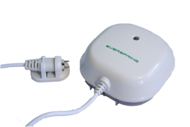
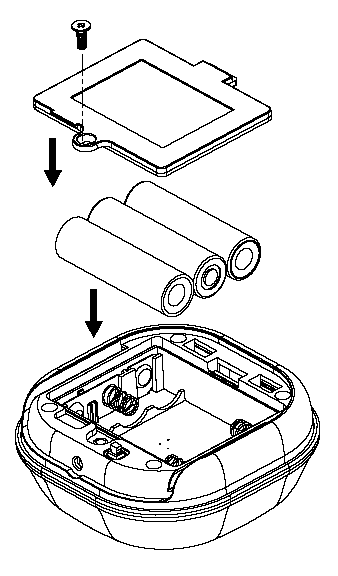
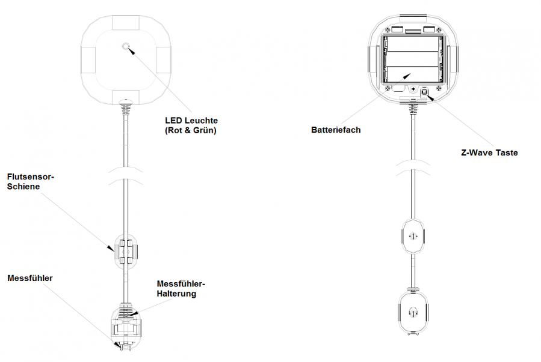

EVR_ST812
Firmware Version : 1.3 |
 |
KurzinfoSDieses Gerät ist ein Z-Wave Sensor. Drücken Sie zum Inkludieren, Exkludieren und Aufwecken des Gerätes drei Sekunden die Inklusions-/Exklusionstaste hinter der Wandhalterung. Weitergehende Informationen finden sich in den jeweiligen Abschnitten dieses Handbuches. |
Produktbeschreibung
Installationsanleitung

1. Lösen Sie die Verriegelungsschrauben an der Rückseite des Gerätes und entfernen Sie die Wandhalterung sowie die Batterieabdeckung.
2. Legen Sie die 3 * AA 1.5V Batterien, wie auf der Abbildung zu sehen, in das Batteriefach ein.
3. Zur Befestigung verwenden Sie die Befestigungsplatte und die mitgelieferten Schrauben.
4. Schließen Sie Batteriefach und Wandhalterung wieder mit den Verriegelungsschrauben.

Installieren Sie das Gerät auf einer ebenen und glatten Oberfläche. Das Kabel des Messfühler hat eine Länge von 3 Metern. Rollen Sie überschüssiges Kabel zusammen, und befestigen Sie es mit Kabelbinder. Das Hauptgerät sollte im Raum so hoch wie möglich angebracht werden, um die Kommunikation zu verbessern und das Gerät vor Wasser zu schützen.
Verhalten des Gerätes im Z-Wave Netz
I Im Auslieferungszustand ist das Gerät mit keinem Z-Wave-Netz verbunden. Damit es mit anderen Z-Wave Geräten kommunizieren kann, muss es in ein bestehendes Z-Wave Netz eingebunden werden. Dieser Prozess wird bei Z-Wave Inklusion genannt. Geräte können Netzwerke auch wieder verlassen. Dieser Prozess heißt bei Z-Wave Exklusion. Beide Prozesse werden von einem Controller gestartet, der dazu in einen Inklusion- bzw. Exklusion-Modus geschaltet werden muss. Das Handbuch des Controllers enthält Informationen, wie er in diese Modi zu schalten ist. Erst wenn der Controller des Z-Wave Netzes im Inclusion-Modus ist, können Geräte hinzugefügt werden. Das Verlassen des Netzes durch Exklusion führt zum Rücksetzen dieses Gerätes in den Auslieferungszustand.
Bringen Sie den Controller in den Inklusion-/Exklusion-Modus. Drücken Sie zum Bestätigen des Inklusion-/ Exklusion-Prozesses drei Sekunden den Z-Wave Taster hinter der Wandhalterung des Gerätes.
Bedienung des Gerätes

- Wenn der Sensor Wasser registriert, blinkt die LED einmal kurz pro Minute und piept für 30 Sekunden. Optional sendet das Gerät zeitgleich ein Signal zum Z-Wave Controller oder einem anderen assoziierten Gerät. Im Normal-Mode kann der Sensor einmal pro Minute ausgelöst werden, um Fehlalarm zu vermeiden.
- Wenn das Wasser wieder entfernt wird, leuchet die grüne LED einmal kurz auf. Optional wird ein Signal an den Z-Wave Controller oder ein anderes assoziiertes Gerät gesendet.
- Wenn die Batterieladung unter einen gewissen Punkt fällt, blinkt die rote LED einmal aller 30 Sekunden und optional wird ein Signal an den Z-Wave Controller gesendet. In diesem Fall tauschen Sie die Batterien, wie in der Anleitung beschrieben, umgehend aus.
Kommunikation mit einem batteriebetriebenen Gerät
W Das Gerät ist batteriegespeist und damit in der Regel in einem Tiefschlafmodus um Strom zu sparen. Im Tiefschlafmodus kann das Gerät keine Funksignale empfangen. Daher wird ein (statischer) Controller benötigt, der netzgespeist und damit immer funkaktiv ist. Dieser Controller - zum Beispiel ein IP-Gateway - verwaltet eine Nachrichten-Mailbox für dieses batteriegespeiste Gerät, in dem Nachrichten an dieses Gerät zwischengespeichert werden. Ohne einen solchen statischen Controller wird die Nutzung dieses batteriebetriebenen Gerätes sehr schnell zur Entladung der Batterie führen oder die Nutzung ist komplett unmöglich.
Dieses Gerät weckt regelmäßig auf, meldet dies durch Aussenden einer sogenannten Wakeup-Notifikation und leert dann seine Mailbox im statischen Controller. Dafür muss bei der Inclusion die Node-ID des Controllers und ein Aufweckinterval definiert werden. Erfolgt die Inklusion durch einen statischen Controller wie zum Beispiel ein IP-Gateway, wird dieser Controller diese Konfiguration automatisch erledigen und in der Regel eine Nutzerschnittstelle anbieten, um das Aufweckinterval den Nutzerbedürfnissen anzupassen. Das Aufweckinterval ist ein Kompromiss zwischen maximaler Batterielaufzeit und minimaler Reaktionszeit des batteriegespeisten Gerätes.
Durch Drücken der In-/Exklusiontaste hinter der Wandhalterung für drei Sekunden oder das Aktivieren des Sensors wird das Gerät aufgeweckt und kann Netzwerkbefehle erhalten.
Es ist möglich die Gerätenummer 255 als Zielgerät für die Wakeup-Notifikation anzugeben. In diesem Falle wird die Nachricht als Broadcast an alle Geräte mit direkter Funkverbindung gesendet. Dem Vorteil der sofortigen Benachrichtigung steht als Nachteil gegenüber, das das Gerät gegebenenfalls mehr Zeit im aktiven Modus und damit mehr Batterieladekapazität verbraucht.
Node Information Frame
NIF Der Node Information Frame ist die Visitenkarte eines Z-Wave Gerätes. Es ist ein spezielles Datenpaket, in dem der Gerätetyp sowie die Funktionen des Gerätes bekanntgemacht werden. Inklusion und Exklusion eines Gerätes wird von diesem mit einem Node Information Frame beantwortet. Zusätzlich kann der Node Information Frame für bestimmte Konfigurationsprozesse des Z-Wave Netzes - zum Beispiel das Setzen von Assoziationen - benötigt werden.
Drücken der In-/Exklusiontaste hinter der Wandhalterung für drei Sekunden oder das Aktivieren des Sensors führt zum Senden eines Node Information Frame.
Assoziationen - wie werden andere Geräte gesteuert?
A Z-Wave Geräte können andere Geräte direkt steuern. Diese direkte Steuerung heißt in Z-Wave Assoziation. In den steuernden Geräten muss dazu die Geräte-ID des zu steuernden Gerätes hinterlegt werden. Dies erfolgt in sogenannten Assoziationsgruppen. Eine Assoziationsgruppe ist immer an ein Ereignis im steuernden Gerät gebunden (Tastendruck oder Auslösen eines Sensors). Bei Eintritt dieses Ereignisses wird an alle in einer Assoziationsgruppe hinterlegten Geräte ein Steuerkommando gesendet.
Assoziationsgruppen:
| 1 | Geräte, die durch Kommandos des Sensors gesteuert werden (max. Anzahl Geräte: 5) |
Technische Daten
| Batterietyp | 1 * CR2 |
| Explorer Frames | Nein |
| SDK | 5.02 pl2 |
| Geräteart | Slave with routing capabilities |
| Allgemeiner Z-Wave-Gerätetyp | Binary Sensor |
| Spezieller Z-Wave-Gerätetyp | Routing Binary Sensor |
| Router | Nein |
| FLiRS | Nein |
| Firmware Version | 1.3 |